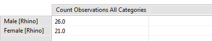

A summary summarizes the raw data and allows for grouping into different categories. Summaries results can only be viewed in tables. Entity summary queries provide the standard data model group by options as well as the ability to group by entity properties.
 |
Example Summary Query |
Items that can be summarized include data model categories (total number of snare observations), and data model numeric attributes (total number of guns). Multiple values can be computed in a single query.
The above values can be grouped time (year, month, etc), areas (management sectors), data model categories and list or tree data model attributes, or entity list or tree properties. Multiple group-bys can be selected for a single query.